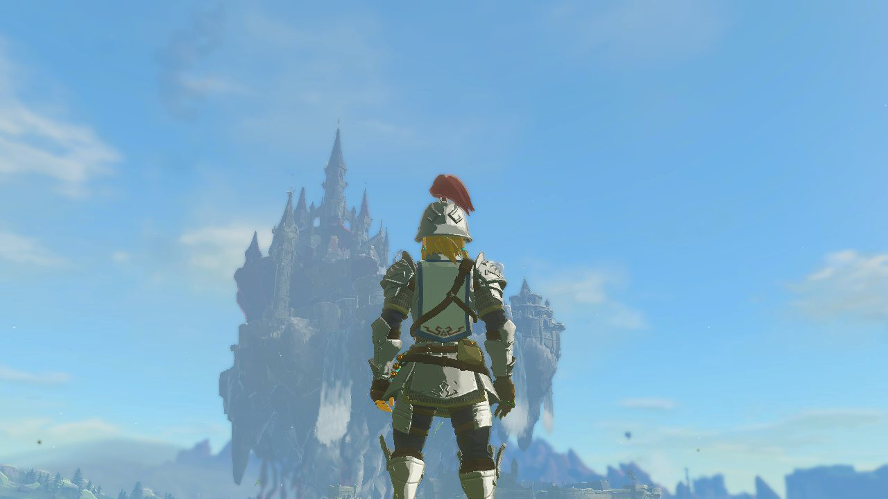

Diario di Link - 1 Febbraio
Il diario di Link prima della battaglia contro Ganon.
Tra due giorni incontrerò Ganon. La paura mi stringe, l’ansia mi soffoca. E se non fossi abbastanza forte per sconfiggerlo?
Tra due giorni incontrerò Ganon e non so come andrà, ma sono sicuro che sarà difficile.
Alzo lo sguardo e il castello è ancora lì. Lo osservo da giorni sempre immobile.
Più lo guardo, più mi sembra diverso.
Forse sono io a essere cambiato.
Tra due giorni incontrerò Ganon e scrivo questa pagina di diario per fermare i pensieri, per dare ordine al caos dentro di me.
La battaglia sarà difficile, lo scontro sarà devastante, ma con il braccio che mi è stato donato sono convinto di poterlo sconfiggere.
Scrivere questa pagina mi sta aiutando a ricordare una cosa importante: la battaglia è ciclica, e io ho già combattuto. Tutte le volte, in qualche modo, sono riuscito a farcela.
Tra due giorni sconfiggerò Ganon.
Ero intrappolato nella paura, aveva avuto la meglio. L'ansia mi imprigionava in una gabbia e Ganon ne era il custode.
La solitudine aveva preso il sopravvento ma ora più guardo le pietre incastonate nel braccio, più sento vicina la presenza di persone disposte ad aiutarmi e combattere al mio fianco.
Le loro voci, che ho aiutato a riaccendere nei momenti bui, mi ricordano che anche loro sono pronti a sostenermi.
Non devo aver paura di cadere.
Guardando la Master Sword, mi rendo conto che non sono mai stato davvero solo. La sua lama porta cicatrici d’oro perché io potessi brandirla di nuovo.
Anche lei deve aver avuto paura, quel giorno. Ma ha scelto di diventare vento, lacrime e memoria pur di non lasciarmi disarmato.
Posso farcela anche questa volta. Perché questa non è una battaglia, è un cerchio e io so già come chiuderlo.